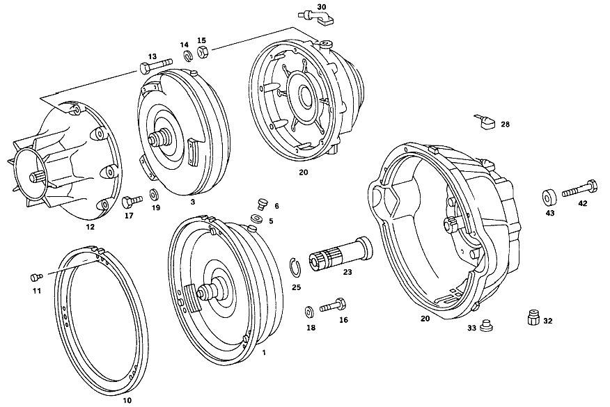

| № | Артикул | Название | Кол. | Примечание | Ограничение |
|---|---|---|---|---|---|
| 1 | A 117 250 02 02 | Гидротрансформатор (CONVERTOR) | 1 | 310 MM | |
| 5 | N 007603 010100 | - Уплотнительное кольцо (SEALING RING) | 1 | 10X13.5 AL | |
| 6 | N 000908 010004 | - Резьбовая пробка | - | M10X1\-10.9 | |
| 6 | N 000000 000648 | - Резьбовая пробка | 1 | ||
| 10 | A 109 250 00 12 | - Зубчатый венец (RING GEAR) | 1 | ||
| 11 | N 910143 006000 | - Винт с 6-гр. глвк (HEXALOBULAR SCREW) | 3 | M6X12 | |
| 16 | N 000933 008222 | Винт (SCREW) | 6 | ВЕДУЩИЙ ДИСК НА ГИДРОТРАНСФОРМАТОРЕ | |
| 18 | N 000137 008204 | Пружинная шайба | - | ||
| 18 | N 000137 008212 | Пружинная шайба (SPRING WASHER) | 6 | ВЕДУЩИЙ ДИСК НА ГИДРОТРАНСФОРМАТОРЕ | |
| 20 | A 116 250 27 05 | Корпус | 1 | ||
| 23 | A 116 272 09 20 | - Вал (SHAFT) | 1 | (ВАЛ СТАТОРА) | |
| 25 | A 115 994 28 35 | - Пруж. стопорное кольцо | 1 | ||
| 28 | A 115 250 03 57 | - ВЕНТИЛЯЦИЯ | - | ||
| 28 | A 115 250 00 66 | - Вентиляционная трубка (BREATHER PIPE) | 1 | [077] UP TO TRANSMISSION: 001 011970 002 025875 004 034499 | |
| 30 | A 115 250 04 57 | - Крышка сапуна (BREATHER CAP) | 1 | [078] FROM TRANSMISSION: 001 011971 002 025876 004 034500 | |
| 32 | A 115 257 10 57 | - Резьбовое кольцо (THREADED RING) | 1 | ||
| 33 | N 000908 022010 | - Резьбовая пробка (SCREW PLUG) | 2 | ||
| 42 | N 000931 010357 | Винт | - | ||
| 42 | A 001 990 94 04 | болт | 6 | CONVERTER HOUSING AND INTERMEDIATE FLANGE TO CYLINDER CRANKCASE | |
| 42 | N 000931 010271 | Винт | 2 | КОРПУС ТРАНСФОРМАТОРА НА ПРОМЕЖУТОЧН.ФЛАНЦЕ | |
| 42 | A 094 990 33 06 | Винт (SCREW) | 2 | КОРПУС ТРАНСФОРМАТОРА НА ПРОМЕЖУТОЧН.ФЛАНЦЕ | |
| 43 | N 000125 010504 | ШАЙБА | 2 | КОРПУС ТРАНСФОРМАТОРА НА ПРОМЕЖУТОЧН.ФЛАНЦЕ | |
| 43 | N 000125 013008 | Шайба | - | ||
| 50 | A 116 270 00 90 | - Корпус | 1 | с PRIMARY PUMP | |
| 51 | A 100 277 17 50 | - втулка (BUSHING) | 1 | ||
| 51 | A 116 277 03 50 | - ВТУЛКА | 1 | ||
| 52 | A 004 997 05 47 | - УПЛОТНИТ. КОЛЬЦО | 1 | ||
| 53 | A 100 277 18 50 | - ВТУЛКА | 1 | ||
| 53 | A 116 277 02 50 | - втулка (BUSHING) | 1 | ||
| 54 | A 004 997 05 48 | - Уплотнительное кольцо (SEALING RING) | 1 | ||
| 55 | N 000931 008046 | - Винт | - | ||
| 55 | N 304017 008018 | - Винт с 6-гранной головкой (HEXAGON HEAD BOLT) | 4 | M8X35 | |
| 56 | N 000137 008204 | - Пружинная шайба | - | ||
| 56 | N 000137 008212 | - Пружинная шайба (SPRING WASHER) | 4 | ||
| 59 | N 000625 016008 | - Шарикоподшипник (BALL BEARING) | 1 | [402] БОЛЬШЕ НЕ ПОСТАВЛЯЕТСЯ | |
| 60 | A 115 270 21 50 | - втулка | 1 | ||
| 61 | A 115 272 06 55 | - УПЛОТНИТ. КОЛЬЦО | - | ||
| 61 | A 316 272 04 55 | - Уплотнительное кольцо | 4 | [402] БОЛЬШЕ НЕ ПОСТАВЛЯЕТСЯ | |
| 62 | A 115 272 07 92 | - Резиновый наконечник (RUBBER CAP) | 1 | ||
| 65 | A 116 270 23 20 | - ФЛАНЕЦ | 1 | МУФТА K 1 [402] БОЛЬШЕ НЕ ПОСТАВЛЯЕТСЯ [180] FROM TRANSMISSION 001 035637,000876 SWEDEN,AUSTRALIA ON 116 270 16 01 002 044313 003 002241 004 078641 ON 116 270 13 01 | |
| 66 | A 100 272 16 31 | - ПОРШЕНЬ | 1 | [179] UP TO TRANSMISSSION 001 035636,000875 SWEDEN,AUSTRALIA ON 116 270 16 01 002 044312 003 002240 004 078640 ON 116 270 13 01 | |
| 66 | A 116 270 16 32 | - ПОРШЕНЬ | 1 | [402] БОЛЬШЕ НЕ ПОСТАВЛЯЕТСЯ [180] FROM TRANSMISSION 001 035637,000876 SWEDEN,AUSTRALIA ON 116 270 16 01 002 044313 003 002241 004 078641 ON 116 270 13 01 | |
| 67 | A 109 272 09 92 | - Уплотнительное кольцо (SEALING RING) | 1 | ||
| 68 | A 115 272 14 92 | - Уплотнительное кольцо (SEALING RING) | 1 | ||
| 69 | A 100 993 02 02 | - Нажимная пружина (COMPRESSION SPRING) | 28 | ||
| 72 | A 100 272 02 64 | - Тарелка пружины (SPRING RETAINER) | 1 | ||
| 73 | A 115 994 08 35 | - Пруж. стопорное кольцо (SNAP RING) | 1 | ||
| 74 | A 100 272 12 52 | - РАСПОРНАЯ ШАЙБА (COMPENSATION RING) | NB | 0.2 MM 0.1MM | |
| 74 | A 100 272 14 52 | - Компенсационная шайба (SHIM) | NB | 0.5 MM | |
| 75 | A 094 990 64 05 | - Стопорное кольцо (RETAINING RING) | 1 | [402] БОЛЬШЕ НЕ ПОСТАВЛЯЕТСЯ | |
| 76 | A 002 981 32 10 | - Сепаратор иг. подшипника (NEEDLE BEARING) | 2 | ||
| 78 | A 115 272 00 25 | - Диск (LAMELLA) | 5 | 2.0 MM CLUTCH K 1 | |
| 80 | A 109 272 18 26 | - Диск (LAMELLA) | 1 | 5.0 MM CLUTCH K1 | |
| 81 | A 109 272 06 26 | - Диск (LAMELLA) | 5 | 3.0 MM AS REQUIRED CLUTCH K1 | |
| 81 | A 109 272 08 26 | - Наружный диск (OUTER PLATE) | 5 | 3.5 MM AS REQUIRED CLUTCH K1 | |
| 88 | A 115 272 12 73 | - Кольцо (RING) | 1 | 153 MM CLUTCH K 1 | |
| 94 | A 116 270 10 43 | - ВОДИЛО ПЛАНЕТ. ПЕРЕДАЧИ | 1 | ПЕРЕДНИЙ ПЛАНЕТАРНЫЙ РЯД [135] FROM TRANSMISSION: 001 027663 002 038626 004 067136 | |
| 96 | A 115 272 04 73 | - Кольцо (RING) | 1 | ||
| 97 | A 109 272 00 27 | - ОПОРА ЛЕНТЫ | 1 | ПЕРЕДАЧА ЗАДНЕГО ХОДА [402] БОЛЬШЕ НЕ ПОСТАВЛЯЕТСЯ [134] UP TO TRANSMISSION: 001 027662 002 038625 004 067135 | |
| 97 | A 116 272 00 27 | - ОПОРА ЛЕНТЫ | 1 | ПЕРЕДАЧА ЗАДНЕГО ХОДА [402] БОЛЬШЕ НЕ ПОСТАВЛЯЕТСЯ [135] FROM TRANSMISSION: 001 027663 002 038626 004 067136 | |
| 98 | A 000 981 99 10 | - ПОДШИПНИК ИГОЛЬЧАТЫЙ | 1 | ||
| 99 | A 100 272 08 52 | - РАСПОРНАЯ ШАЙБА | NB | 0.1 MM | |
| 99 | A 100 272 09 52 | - РАСПОРНАЯ ШАЙБА | NB | 0.2 MM | |
| 99 | A 100 272 10 52 | - РАСПОРНАЯ ШАЙБА | - | ||
| 99 | A 389 262 57 52 | - Дистанционная шайба | NB | 0.5 MM 0,5 MM | |
| 103 | A 116 270 21 20 | - ФЛАНЕЦ | 1 | МУФТА K 2 [089] FROM TRANSMISSION: 001 020027 002 032393 004 054086 | |
| 106 | A 116 272 01 31 | - ПОРШЕНЬ | 1 | ||
| 108 | A 109 272 08 92 | - Уплотнительное кольцо (SEALING RING) | 1 | ||
| 109 | A 109 272 04 92 | - Уплотнительное кольцо (SEALING RING) | 1 | ||
| 112 | A 100 270 00 31 | - ОБГОННАЯ МУФТА | 1 | ||
| 115 | A 100 272 41 24 | - Держатель фрикционов (OUTER PLATE CARRIER) | 1 | ||
| 116 | A 115 272 04 73 | - Кольцо (RING) | 1 | ||
| 117 | A 115 272 00 25 | - Диск (LAMELLA) | 5 | 2.0 MM CLUTCH K 2 | |
| 120 | A 109 272 22 26 | - Диск (LAMELLA) | 4 | 4.5 MM CLUTCH K2 | |
| 122 | A 109 272 21 26 | - Диск (LAMELLA) | 1 | 5.0 MM CLUTCH K2 | |
| 122 | A 109 272 23 26 | - Диск (LAMELLA) | 4 | 5.0 MM CLUTCH K2 [008] UP TO TRANSMISSION:004 008057 | |
| 122 | A 109 272 15 26 | - Диск (LAMELLA) | 1 | 2.0 MM CLUTCH K 2 | |
| 130 | A 115 272 13 73 | - Кольцо (RING) | 1 | ||
| 131 | A 002 981 31 10 | - Игольчатый подшипник (NEEDLE ROLLER BEARING) | 1 | [402] БОЛЬШЕ НЕ ПОСТАВЛЯЕТСЯ | |
| 132 | A 100 993 88 01 | - Нажимная пружина (COMPRESSION SPRING) | 24 | ||
| 136 | A 109 272 03 67 | - КОЛЬЦО | 1 | ||
| 138 | A 109 272 03 62 | - УПОРНАЯ ШАЙБА | 1 | [402] БОЛЬШЕ НЕ ПОСТАВЛЯЕТСЯ [103] UP TO TRANSMISSION: 001 025520 002 036674 003 000311 004 062741 | |
| 138 | A 115 272 34 62 | - Упорная шайба (THRUST PLATE) | 1 | [104] FROM TRANSMISSION: 001 025521 002 036675 003 000312 004 062742 | |
| 150 | A 100 272 39 20 | - ВАЛ | 1 | (ПОЛЫЙ ВАЛ) | |
| 151 | A 109 994 00 35 | - СТОПОРН. КОЛЬЦО | 1 | [402] БОЛЬШЕ НЕ ПОСТАВЛЯЕТСЯ | |
| 153 | A 116 270 13 25 | - ПРИВОДНОЙ ВАЛ | 1 | (ПРОМЕЖУТОЧНЫЙ ВАЛ) [402] БОЛЬШЕ НЕ ПОСТАВЛЯЕТСЯ [104] FROM TRANSMISSION: 001 025521 002 036675 003 000312 004 062742 | |
| 158 | A 112 994 07 35 | - Пруж. стопорное кольцо (SNAP RING) | 1 | 125 MM | |
| 159 | A 115 272 02 73 | - Кольцо (RING) | 1 | 130 MM | |
| 161 | A 005 981 81 10 | - Сепаратор иг. подшипника (NEEDLE BEARING) | 1 | [227] UP TO TRANSMISSSION 003 004305,000064 AUSTRALIA ON 116 270 21 01 006 000360 | |
| 162 | A 002 981 30 10 | - Игольчатый подшипник (NEEDLE ROLLER BEARING) | 1 | ||
| 168 | A 109 270 16 43 | - ВОДИЛО ПЛАНЕТ. ПЕРЕДАЧИ | 1 | ЗАДНИЙ ПЛАНЕТАРНЫЙ РЯД | |
| 176 | A 007 981 39 10 | - Игольчатый подшипник (NEEDLE ROLLER BEARING) | 1 | ||
| 179 | A 004 981 40 10 | - Сепаратор иг. подшипника (NEEDLE BEARING) | 1 | ||
| 180 | A 115 272 37 62 | - Упорная шайба | 1 | ||
| 181 | A 001 981 18 25 | - Рад. шарикоподшипник (DEEP-GROOVE BALL BEARING) | 1 | ||
| 185 | A 116 270 09 25 | - ПРИВОДНОЙ ВАЛ | 1 | [402] БОЛЬШЕ НЕ ПОСТАВЛЯЕТСЯ | |
| 187 | A 112 994 07 35 | - Пруж. стопорное кольцо (SNAP RING) | 1 | ||
| 188 | A 115 272 02 73 | - Кольцо (RING) | 1 | ||
| 190 | A 100 272 04 55 | - Уплотнительное кольцо (SEALING RING) | 1 | ||
| 192 | A 100 272 12 52 | - РАСПОРНАЯ ШАЙБА (COMPENSATION RING) | NB | 0.2 MM 0.1MM | |
| 192 | A 100 272 14 52 | - Компенсационная шайба (SHIM) | NB | 0.5 MM | |
| 195 | A 001 981 80 10 | - Игольчатый подшипник (NEEDLE ROLLER BEARING) | 1 | ||
| 210 | A 116 270 05 11 | - КОРПУС КП | 1 | [402] БОЛЬШЕ НЕ ПОСТАВЛЯЕТСЯ [006] UP TO TRANSMISSION:001 006209 | |
| 210 | A 116 270 01 11 | - КОРПУС КП | 1 | [402] БОЛЬШЕ НЕ ПОСТАВЛЯЕТСЯ [015] FROM TRANSMISSION:001 006210 | |
| 213 | A 115 997 06 30 | - Резьбовая пробка (SCREW PLUG) | 1 | ||
| 214 | N 007603 008105 | - Уплотнительное кольцо (SEALING RING) | 1 | ||
| 215 | A 006 997 61 46 | - Уплотнительное кольцо (SEALING RING) | 2 | [016] UP TO TRANSMISSION 001 006209 002 020640 004 026590 EXCEPT FOR 025741-025753 | |
| 215 | A 006 997 61 46 | Уплотнительное кольцо (SEALING RING) | 1 | [017] FROM TRANSMISSION 001 006210 002 020641 004 026591 ALSO INSTALLED ON 025741-025753 | |
| 220 | A 115 272 11 92 | - Уплотнительное кольцо (SEALING RING) | 1 | ||
| 221 | A 110 997 03 30 | - Резьбовая пробка (SCREW PLUG) | 1 | [016] UP TO TRANSMISSION 001 006209 002 020640 004 026590 EXCEPT FOR 025741-025753 | |
| 222 | N 007603 012104 | - Уплотнительное кольцо (SEALING RING) | 1 | [016] UP TO TRANSMISSION 001 006209 002 020640 004 026590 EXCEPT FOR 025741-025753 | |
| 223 | A 115 270 08 68 | - НАПРАВЛ. ТРУБКА | 1 | [018] AGAINST SQUEALING OF TRANSMISSION | |
| 226 | A 116 277 00 40 | - Держатель (HOLDER) | 1 | СВЕРХУ [020] FROM TRANSMISSION: 001 004303 002 020151 004 025161 | |
| 226 | A 115 277 16 40 | - ДЕРЖАТЕЛЬ | 1 | СВЕРХУ [021] UP TO TRANSMISSION: 001 004302 002 020150 004 008058-025160 | |
| 227 | A 115 277 12 40 | - ДЕРЖАТЕЛЬ | 1 | ВНИЗУ [016] UP TO TRANSMISSION 001 006209 002 020640 004 026590 EXCEPT FOR 025741-025753 | |
| 227 | A 115 277 24 40 | - Держатель (HOLDER) | 1 | ВНИЗУ [017] FROM TRANSMISSION 001 006210 002 020641 004 026591 ALSO INSTALLED ON 025741-025753 | |
| 230 | A 109 270 33 07 | - КОРПУС ЗОЛОТНИКА | 1 | МОДУЛИРУЮЩЕЕ ДАВЛЕНИЕ [100] UP TO TRANSMISSION:001 024820 | |
| 230 | A 100 270 33 07 | - КОРПУС ЗОЛОТНИКА | 1 | МОДУЛИРУЮЩЕЕ ДАВЛЕНИЕ [101] FROM TRANSMISSION:001 024821 [161] 001: FOR AUSTRALIA UP TO CHASSIS 107.024 013531 107.044 032871 116.032,033 052474 001: FOR SWEDEN UP TO CHASSIS 107.024 014249 116.032,033 054557 | |
| 230 | A 116 270 19 07 | - КОРПУС ЗОЛОТНИКА | 1 | МОДУЛИРУЮЩЕЕ ДАВЛЕНИЕ [080] UP TO TRANSMISSION:004 045110 [162] 001 FOR AUSTRALIA FROM CHASSIS 107.024 013532 107.044 032872 116.032,033 052475 001 FOR SWEDEN FROM CHASSIS 107.024 014250 116.032,033 054558 [009] FROM TRANSMISSION: 004 008058 | |
| 231 | A 115 993 20 10 | - пружина | 2 | [402] БОЛЬШЕ НЕ ПОСТАВЛЯЕТСЯ | |
| 232 | N 000931 006115 | - Винт | - | ||
| 232 | N 000933 006151 | - Винт | 2 | ||
| 233 | N 000137 006204 | - Пружинная шайба (SPRING WASHER) | 3 | ||
| 235 | A 000 545 33 06 | - Переключатель (SWITCH) | 1 | ПЕРЕКЛЮЧАТЕЛЬ БЛОКИРОВКИ ПУСКА ДВИГАТЕЛЯ И ФОНАРЕЙ ЗАДНЕГО ХОДА [016] UP TO TRANSMISSION 001 006209 002 020640 004 026590 EXCEPT FOR 025741-025753 | |
| 236 | A 000 545 42 06 | - Переключатель (SWITCH) | 1 | ПЕРЕКЛЮЧАТЕЛЬ БЛОКИРОВКИ ПУСКА ДВИГАТЕЛЯ И ФОНАРЕЙ ЗАДНЕГО ХОДА [017] FROM TRANSMISSION 001 006210 002 020641 004 026591 ALSO INSTALLED ON 025741-025753 | |
| 236 | A 000 545 46 06 | - Переключатель | 1 | ПЕРЕКЛЮЧАТЕЛЬ БЛОКИРОВКИ ПУСКА ДВИГАТЕЛЯ И ФОНАРЕЙ ЗАДНЕГО ХОДА [017] FROM TRANSMISSION 001 006210 002 020641 004 026591 ALSO INSTALLED ON 025741-025753 | |
| 237 | A 115 997 07 40 | - Уплотнительное кольцо (SEALING RING) | 1 | [016] UP TO TRANSMISSION 001 006209 002 020640 004 026590 EXCEPT FOR 025741-025753 | |
| 239 | N 000137 005203 | - Пружинная шайба (SPRING WASHER) | 2 | ||
| 241 | N 000933 005081 | - Винт | 2 | [017] FROM TRANSMISSION 001 006210 002 020641 004 026591 ALSO INSTALLED ON 025741-025753 | |
| 243 | A 116 278 00 20 | - РЫЧАГ | 1 | [402] БОЛЬШЕ НЕ ПОСТАВЛЯЕТСЯ [022] UP TO TRANSMISSSION 001 006209 ON 116.032,033 L.H.D. 002 020640 ON 116.028 L.H.D. | |
| 243 | A 115 278 25 20 | - Рычаг селектора диапазон. | 1 | [402] БОЛЬШЕ НЕ ПОСТАВЛЯЕТСЯ [024] FROM TRANSMISSION 001 006210 ON 116.032,033 L.H.D. 002 020641 ON 116.028 L.H.D. | |
| 244 | A 116 270 02 56 | - РЫЧАГ | 1 | Рулевое управление: ВправоАвтоматическая коробка переключения передач [402] БОЛЬШЕ НЕ ПОСТАВЛЯЕТСЯ [026] FROM CHASSIS: 116.028 014943 116.032,033 013656 | |
| 248 | A 115 545 01 42 | - ПОВОДОК (CONNECTING DRUM) | 1 | [017] FROM TRANSMISSION 001 006210 002 020641 004 026591 ALSO INSTALLED ON 025741-025753 | |
| 250 | A 115 278 09 10 | - ВАЛ РЕГУЛЯТОРА | 1 | [402] БОЛЬШЕ НЕ ПОСТАВЛЯЕТСЯ [016] UP TO TRANSMISSION 001 006209 002 020640 004 026590 EXCEPT FOR 025741-025753 | |
| 250 | A 115 278 16 10 | - Вал (SHAFT) | 1 | [017] FROM TRANSMISSION 001 006210 002 020641 004 026591 ALSO INSTALLED ON 025741-025753 | |
| 251 | A 115 278 09 50 | - втулка (BUSHING) | 1 | [016] UP TO TRANSMISSION 001 006209 002 020640 004 026590 EXCEPT FOR 025741-025753 | |
| 252 | A 115 278 01 53 | - РАСПОРН. ТРУБКА | 1 | [402] БОЛЬШЕ НЕ ПОСТАВЛЯЕТСЯ [016] UP TO TRANSMISSION 001 006209 002 020640 004 026590 EXCEPT FOR 025741-025753 | |
| 253 | A 004 997 37 45 | - Уплотнительное кольцо (SEALING RING) | 1 | [016] UP TO TRANSMISSION 001 006209 002 020640 004 026590 EXCEPT FOR 025741-025753 | |
| 258 | N 000084 004155 | - Винт | 1 | [016] UP TO TRANSMISSION 001 006209 002 020640 004 026590 EXCEPT FOR 025741-025753 | |
| 259 | N 009021 004202 | - Шайба | - | ||
| 259 | A 094 990 63 08 | - Шайба (WINDOW) | 1 | [016] UP TO TRANSMISSION 001 006209 002 020640 004 026590 EXCEPT FOR 025741-025753 | |
| 260 | N 000137 004202 | - Пружинная шайба (SPRING WASHER) | 1 | [016] UP TO TRANSMISSION 001 006209 002 020640 004 026590 EXCEPT FOR 025741-025753 | |
| 270 | A 115 270 01 57 | - Пластина фиксации сел.АКП | 1 | [028] UP TO TRANSMISSION: 001 003857 002 018240 004 023540 | |
| 270 | A 115 270 04 57 | - Пластина фиксации сел.АКП (DETENT PLATE) | 1 | [029] FROM TRANSMISSION: 001 003858 002 018241 004 023541 | |
| 273 | N 006912 006006 | - Винт | 1 | ||
| 274 | N 000137 006204 | - Пружинная шайба (SPRING WASHER) | 1 | ||
| 280 | A 109 270 10 89 | - Нажимной элемент (PRESSURE VESSEL) | 1 | [032] FROM TRANSMISSION: 001 000108 002 010941 004 014625 | |
| 285 | A 109 270 11 89 | - Нажимной элемент (PRESSURE VESSEL) | 1 | [032] FROM TRANSMISSION: 001 000108 002 010941 004 014625 | |
| 288 | A 126 277 11 58 | - Крепление упл. кольца | - | [414] СТАРУЮ ДЕТАЛЬ УСТАНАВЛИВАТЬ БОЛЬШЕ НЕ РАЗРЕШАЕТСЯ | |
| 288 | A 140 277 01 51 | - Проставочное кольцо (SPACER RING) | 2 | [032] FROM TRANSMISSION: 001 000108 002 010941 004 014625 | |
| 290 | A 010 997 08 45 | - УПЛОТНИТ. КОЛЬЦО | - | ||
| 290 | A 016 997 34 48 | - Кольцевая прокладка (O-RING) | 2 | [035] FROM TRANSMISSION: 000 004292 004 000001 | |
| 291 | A 115 993 00 22 | - пружина | 1 | [402] БОЛЬШЕ НЕ ПОСТАВЛЯЕТСЯ | |
| 292 | A 109 277 01 75 | - Нажимной штифт (PRESSURE PIN) | 1 | ПО НЕОБХОДИМОСТИ 22 MM [036] UP TO TRANSMISSION: 001 000107 002 010940 004 014624 | |
| 292 | A 109 277 02 75 | - ШТИФТ | 1 | ПО НЕОБХОДИМОСТИ 23 MM | |
| 292 | A 109 277 03 75 | - Нажимной штифт (PRESSURE PIN) | 1 | ПО НЕОБХОДИМОСТИ 24mm | |
| 292 | A 109 277 04 75 | - Нажимной штифт (PRESSURE PIN) | 1 | 25 MM AS REQUIRED | |
| 292 | A 109 277 05 75 | - Нажимной штифт (PRESSURE PIN) | 1 | 26 MM AS REQUIRED | |
| 295 | A 115 277 02 74 | - Палец (PIN) | 1 | ||
| 296 | A 115 277 04 24 | - РЫЧАГ | 1 | ||
| 299 | A 115 277 53 75 | - Нажимной штифт (PRESSURE PIN) | 2 | ||
| 300 | A 115 993 02 25 | - пружина | 1 | ||
| 301 | A 115 277 17 71 | - болт (SCREW) | 1 | ||
| 302 | A 115 990 04 51 | - гайка (NUT) | 1 | ||
| 310 | A 109 277 01 75 | - Нажимной штифт (PRESSURE PIN) | 1 | ПО НЕОБХОДИМОСТИ 22 MM [036] UP TO TRANSMISSION: 001 000107 002 010940 004 014624 | |
| 310 | A 109 277 02 75 | - ШТИФТ | 1 | ПО НЕОБХОДИМОСТИ 23 MM | |
| 310 | A 109 277 03 75 | - Нажимной штифт (PRESSURE PIN) | 1 | ПО НЕОБХОДИМОСТИ 24mm | |
| 310 | A 109 277 04 75 | - Нажимной штифт (PRESSURE PIN) | 1 | 25 MM AS REQUIRED | |
| 310 | A 109 277 05 75 | - Нажимной штифт (PRESSURE PIN) | 1 | 26 MM AS REQUIRED | |
| 316 | A 115 270 74 32 | - ПОРШЕНЬ | 1 | [402] БОЛЬШЕ НЕ ПОСТАВЛЯЕТСЯ | |
| 321 | A 115 272 08 92 | - Уплотнительное кольцо (SEALING RING) | 1 | ||
| 324 | A 115 994 17 35 | - Пруж. стопорное кольцо (SNAP RING) | 1 | ||
| 325 | A 115 993 18 05 | - пружина | 1 | [402] БОЛЬШЕ НЕ ПОСТАВЛЯЕТСЯ | |
| 330 | A 115 277 16 03 | - КРЫШКА | 1 | [402] БОЛЬШЕ НЕ ПОСТАВЛЯЕТСЯ [016] UP TO TRANSMISSION 001 006209 002 020640 004 026590 EXCEPT FOR 025741-025753 | |
| 330 | A 115 277 37 03 | - Крышка (CAP) | 1 | [017] FROM TRANSMISSION 001 006210 002 020641 004 026591 ALSO INSTALLED ON 025741-025753 | |
| 335 | A 008 997 35 45 | - Уплотнительное кольцо (SEALING RING) | 1 | ||
| 337 | A 115 270 24 89 | - Клапан заправочный (FILLING VALVE) | 1 | ПЕРЕДАЧА ЗАДНЕГО ХОДА [017] FROM TRANSMISSION 001 006210 002 020641 004 026591 ALSO INSTALLED ON 025741-025753 | |
| 338 | A 002 997 21 48 | - Уплотнительное кольцо (SEALING RING) | 1 | [017] FROM TRANSMISSION 001 006210 002 020641 004 026591 ALSO INSTALLED ON 025741-025753 | |
| 339 | A 094 990 89 07 | - Уплотнительное кольцо (SEALING RING) | 1 | 16X22 [017] FROM TRANSMISSION 001 006210 002 020641 004 026591 ALSO INSTALLED ON 025741-025753 | |
| 340 | A 115 994 30 35 | - СТОПОРН. КОЛЬЦО | 1 | [402] БОЛЬШЕ НЕ ПОСТАВЛЯЕТСЯ | |
| 344 | A 115 270 06 59 | - РЫЧАГ | 1 | [016] UP TO TRANSMISSION 001 006209 002 020640 004 026590 EXCEPT FOR 025741-025753 | |
| 344 | A 115 270 14 59 | - Рычаг (LEVER) | 1 | [017] FROM TRANSMISSION 001 006210 002 020641 004 026591 ALSO INSTALLED ON 025741-025753 | |
| 345 | A 007 997 44 47 | - Уплотнительное кольцо (SEALING RING) | 1 | [017] FROM TRANSMISSION 001 006210 002 020641 004 026591 ALSO INSTALLED ON 025741-025753 | |
| 348 | A 115 990 17 40 | - Диск (WINDOW) | 1 | ||
| 349 | N 006799 009002 | - Стопорная шайба (RETAINING WASHER) | 1 | ||
| 355 | A 115 270 08 59 | - Рычаг (LEVER) | 1 | УПРАВЛ. ДАВЛЕНИЕ | |
| 356 | N 000933 006123 | - Винт (SCREW) | 1 | ||
| 357 | N 000137 006204 | - Пружинная шайба (SPRING WASHER) | 2 | ||
| 358 | N 000934 006013 | - Гайка | - | ||
| 358 | N 304032 006008 | - Шестигранная гайка (HEXAGON NUT) | 1 | ||
| 360 | A 116 270 11 62 | - ЛЕНТА ТОРМОЗНАЯ | - | ||
| 360 | A 116 270 18 62 | - Тормозная лента (BRAKE BAND) | 1 | ПЕРЕДАЧА ЗАДНЕГО ХОДА | |
| 363 | A 100 993 95 01 | - ПРУЖИНА | 1 | [006] UP TO TRANSMISSION:001 006209 | |
| 364 | A 116 993 53 01 | - ПРУЖИНА | 1 | [402] БОЛЬШЕ НЕ ПОСТАВЛЯЕТСЯ [015] FROM TRANSMISSION:001 006210 | |
| 365 | A 116 993 54 01 | - ПРУЖИНА | 1 | [402] БОЛЬШЕ НЕ ПОСТАВЛЯЕТСЯ [015] FROM TRANSMISSION:001 006210 | |
| 366 | A 115 270 59 32 | - ПОРШЕНЬ | 1 | [006] UP TO TRANSMISSION:001 006209 | |
| 366 | A 115 270 66 32 | - Поршень (PISTON) | 1 | [015] FROM TRANSMISSION:001 006210 | |
| 370 | A 115 272 03 92 | - Уплотнительное кольцо (SEALING RING) | 1 | [006] UP TO TRANSMISSION:001 006209 | |
| 372 | A 115 272 10 92 | - Уплотнительное кольцо (SEALING RING) | 1 | [015] FROM TRANSMISSION:001 006210 | |
| 390 | A 115 277 19 03 | - КРЫШКА | 1 | [006] UP TO TRANSMISSION:001 006209 | |
| 390 | A 115 277 41 03 | - Крышка (CAP) | 1 | [015] FROM TRANSMISSION:001 006210 | |
| 398 | A 000 997 47 48 | - Уплотнительное кольцо (SEALING RING) | 1 | [015] FROM TRANSMISSION:001 006210 | |
| 400 | A 010 997 59 45 | - Уплотнительное кольцо (SEALING RING) | 1 | [006] UP TO TRANSMISSION:001 006209 | |
| 402 | A 115 994 14 35 | - Пруж. стопорное кольцо (SNAP RING) | 1 | [006] UP TO TRANSMISSION:001 006209 | |
| 402 | A 115 994 26 35 | - СТОПОРН. КОЛЬЦО | 1 | [402] БОЛЬШЕ НЕ ПОСТАВЛЯЕТСЯ [015] FROM TRANSMISSION:001 006210 | |
| 405 | A 000 304 07 90 | ПЕРЕКЛ.МАГНИТ | 1 | [016] UP TO TRANSMISSION 001 006209 002 020640 004 026590 EXCEPT FOR 025741-025753 | |
| 410 | A 000 304 05 90 | ПЕРЕКЛ.МАГНИТ | 1 | [016] UP TO TRANSMISSION 001 006209 002 020640 004 026590 EXCEPT FOR 025741-025753 | |
| 413 | A 010 997 77 45 | - Уплотнительное кольцо (SEALING RING) | 1 | ||
| 414 | A 007 997 96 45 | Уплотнительное кольцо (SEALING RING) | 1 | [016] UP TO TRANSMISSION 001 006209 002 020640 004 026590 EXCEPT FOR 025741-025753 | |
| 414 | A 008 997 30 48 | - Уплотнительное кольцо (SEALING RING) | 1 | [017] FROM TRANSMISSION 001 006210 002 020641 004 026591 ALSO INSTALLED ON 025741-025753 | |
| 415 | A 001 997 35 48 | - Уплотнительное кольцо (SEALING RING) | 1 | [017] FROM TRANSMISSION 001 006210 002 020641 004 026591 ALSO INSTALLED ON 025741-025753 | |
| 416 | A 115 304 01 60 | - Уплотнительное кольцо (SEALING RING) | 1 | SIEHE BILD NR.415 | |
| 425 | A 115 270 55 32 | - ПОРШЕНЬ | 1 | [009] FROM TRANSMISSION: 004 008058 [016] UP TO TRANSMISSION 001 006209 002 020640 004 026590 EXCEPT FOR 025741-025753 | |
| 425 | A 115 270 69 32 | - Поршень (PISTON) | 1 | [044] FROM TRANSMISSION:001 006210 | |
| 428 | A 115 277 02 55 | - Уплотнительное кольцо (SEALING RING) | 1 | [009] FROM TRANSMISSION: 004 008058 [006] UP TO TRANSMISSION:001 006209 | |
| 429 | A 115 277 07 55 | - Уплотнительное кольцо (SEALING RING) | 1 | [402] БОЛЬШЕ НЕ ПОСТАВЛЯЕТСЯ [015] FROM TRANSMISSION:001 006210 | |
| 430 | A 008 997 35 45 | - Уплотнительное кольцо (SEALING RING) | 1 | [008] UP TO TRANSMISSION:004 008057 [006] UP TO TRANSMISSION:001 006209 | |
| 431 | A 094 997 37 01 | - Уплотнительное кольцо (SEALING RING) | 1 | [015] FROM TRANSMISSION:001 006210 | |
| 435 | A 115 993 23 05 | - пружина | 1 | [402] БОЛЬШЕ НЕ ПОСТАВЛЯЕТСЯ | |
| 440 | A 115 277 16 03 | - КРЫШКА | 1 | [402] БОЛЬШЕ НЕ ПОСТАВЛЯЕТСЯ [009] FROM TRANSMISSION: 004 008058 [016] UP TO TRANSMISSION 001 006209 002 020640 004 026590 EXCEPT FOR 025741-025753 | |
| 442 | A 115 277 42 03 | - Крышка (CAP) | 1 | [015] FROM TRANSMISSION:001 006210 | |
| 444 | A 115 994 04 35 | - Пруж. стопорное кольцо (SNAP RING) | 1 | [006] UP TO TRANSMISSION:001 006209 | |
| 444 | A 115 994 27 35 | - СТОПОРН. КОЛЬЦО | 1 | [402] БОЛЬШЕ НЕ ПОСТАВЛЯЕТСЯ [015] FROM TRANSMISSION:001 006210 | |
| 460 | A 115 270 56 62 | - ЛЕНТА ТОРМОЗНАЯ | - | ||
| 460 | A 115 270 69 62 | - Тормозная лента (BRAKE BAND) | 1 | B 1 | |
| 461 | N 000137 008204 | - Пружинная шайба | - | ||
| 461 | N 000137 008212 | - Пружинная шайба (SPRING WASHER) | 11 | ||
| 462 | N 000931 008327 | - Винт | - | ||
| 462 | N 304017 008043 | - Винт с 6-гранной головкой (HEXAGON HEAD BOLT) | 11 | M8X55 \- 8.8 | |
| 466 | A 115 277 26 80 | - ПРОКЛАДКА УПЛОТНИТЕЛЬНАЯ | - | ||
| 466 | A 115 277 33 80 | - Уплотнение (SEAL) | 1 | ||
| 470 | A 115 272 01 17 | - Шестерня | - | ||
| 470 | A 722 272 00 17 | - ШЕСТЕРНЯ | 1 | [402] БОЛЬШЕ НЕ ПОСТАВЛЯЕТСЯ | |
| 472 | A 115 278 07 74 | - Палец (PIN) | 1 | ||
| 473 | A 000 994 42 41 | - Стопорное кольцо (RETAINING RING) | 1 | ||
| 474 | A 115 993 02 22 | - пружина | 1 | ||
| 475 | A 116 278 00 21 | - Собачка (LOCKING PAWL) | 1 | ||
| 485 | A 116 270 00 65 | - ТЯГИ | 1 | [402] БОЛЬШЕ НЕ ПОСТАВЛЯЕТСЯ | |
| 490 | A 115 278 05 17 | - Ролик (ROLL) | 1 | ПОДВИЖН. [241] FROM TRANSMISSION 002 062876 004 202091 ON 116 270 13 01 [175] UP TO TRANSMISSSION 004 078640 ON 116 270 13 01 002 043611 | |
| 491 | A 115 278 08 74 | - Палец (PIN) | 1 | ||
| 492 | A 115 990 21 40 | - ШАЙБА | 1 | [241] FROM TRANSMISSION 002 062876 004 202091 ON 116 270 13 01 [175] UP TO TRANSMISSSION 004 078640 ON 116 270 13 01 002 043611 | |
| 493 | A 000 981 51 87 | - Игла подшипника (BEARING NEEDLE) | 23 | ||
| 495 | A 115 278 04 17 | - Ролик (ROLL) | 1 | НЕПОДВИЖН. СТОЯЩ. | |
| 496 | A 094 990 61 07 | - Стопорная шайба (RETAINING WASHER) | 1 | ||
| 497 | A 115 278 00 62 | - Упорная шайба (THRUST PLATE) | 1 | [177] НАЧ. С ДВИГ. 001 034486,000776 SWEDEN,AUSTRALIA 002 043612 003 002004 004 078641 ON 116 270 13 01 | |
| 499 | A 100 270 01 78 | - пружина | 1 | ||
| 500 | A 115 278 04 40 | - Держатель (HOLDER) | 1 | [189] UP TO TRANSMISSION:001 042686,001425 SWEDEN,AUSTRALIA ON 116 270 16 01 | |
| 500 | A 116 278 00 40 | - ДЕРЖАТЕЛЬ | 1 | [402] БОЛЬШЕ НЕ ПОСТАВЛЯЕТСЯ [190] FROM TRANSMISSION:001 042687,001426 SWEDEN,AUSTRALIA ON 116 270 16 01 | |
| 501 | N 000137 006204 | - Пружинная шайба (SPRING WASHER) | 1 | ||
| 502 | N 000933 006102 | - Винт | - | ||
| 502 | N 304017 006016 | - Винт с 6-гранной головкой (HEXAGON HEAD BOLT) | 1 | M6X16 | |
| 510 | A 109 270 00 74 | - РЕГУЛЯТОР | 1 | ЦЕНТРОБЕЖ. РЕГУЛЯТОР | |
| 520 | A 115 272 03 55 | - УПЛОТНИТ. КОЛЬЦО | 3 | ||
| 520 | A 115 272 13 55 | - Уплотнительное кольцо (SEALING RING) | 3 | ||
| 522 | A 115 270 00 98 | - Масляный фильтр (OIL FILTER) | 1 | [181] UP TO TRANSMISSSION 001 033186,000626 SWEDEN,AUSTRALIA ON 116 270 16 01 002 042926 003 001826 004 078641 ON 116 270 13 01 | |
| 522 | A 115 270 00 98 | Масляный фильтр (OIL FILTER) | 2 | [182] FROM TRANSMISSION 001 033187,000627 SWEDEN,AUSTRALIA ON 116 270 16 01 002 042927 003 001827 004 078642 ON 116 270 13 01 | |
| 523 | A 115 270 03 42 | - Ведущее колесо (DRIVE WHEEL) | 1 | ||
| 525 | A 115 993 04 26 | - Тарельчатая пружина (DISK SPRING) | 1 | ||
| 532 | A 123 270 17 11 | - Корпус коробки передач (TRANSMISSION HOUSING) | 1 | ||
| 536 | A 115 997 01 03 | - Пробка (GROMMET) | 1 | ||
| 537 | A 115 997 03 03 | - Пробка (GROMMET) | 1 | [178] UP TO TRANSMISSSION 001 034485,000775 SWEDEN,AUSTRALIA ON 116 270 16 01 002 043625 003 002003 004 078640 ON 116 270 13 01 | |
| 538 | A 115 993 38 03 | - Нажимная пружина (COMPRESSION SPRING) | 1 | ||
| 539 | A 115 277 62 75 | - Нажимной штифт (PRESSURE PIN) | 1 | ||
| 540 | A 000 981 81 85 | - Шар (BALL) | 1 | ||
| 541 | N 007603 010100 | - Уплотнительное кольцо (SEALING RING) | 1 | 10X13.5 AL | |
| 542 | A 115 997 01 30 | - ЗАГЛУШКА РЕЗЬБОВАЯ | 1 | [402] БОЛЬШЕ НЕ ПОСТАВЛЯЕТСЯ | |
| 543 | N 007603 012104 | - Уплотнительное кольцо (SEALING RING) | 1 | ||
| 544 | N 007604 012102 | - Резьбовая пробка | 1 | ||
| 544 | N 007604 012105 | - Резьбовая пробка (SCREW PLUG) | 1 | M12X1,5 | |
| 547 | A 115 277 50 38 | - Поршень (PISTON) | 1 | [046] FROM TRANSMISSION: 002 001109 004 008058 | |
| 548 | A 115 993 05 04 | - пружина | 1 | [402] БОЛЬШЕ НЕ ПОСТАВЛЯЕТСЯ [046] FROM TRANSMISSION: 002 001109 004 008058 | |
| 549 | A 115 997 06 30 | - Резьбовая пробка (SCREW PLUG) | 2 | ||
| 550 | N 007603 008105 | - Уплотнительное кольцо (SEALING RING) | 2 | ||
| 552 | A 115 270 03 27 | - Ведущее колесо (DRIVE WHEEL) | 1 | ||
| 554 | A 115 274 06 28 | - Корпус (HOUSING) | 1 | ||
| 555 | A 005 997 52 45 | - Уплотнительное кольцо (SEALING RING) | 1 | ||
| 556 | A 115 274 00 60 | - УПЛОТНИТ. КОЛЬЦО | 1 | [402] БОЛЬШЕ НЕ ПОСТАВЛЯЕТСЯ | |
| 557 | A 114 991 01 29 | - Шар (BALL) | 1 | ПОРШНЕВОЙ НАСОС | |
| 558 | A 115 993 13 02 | - пружина | 1 | ПОРШНЕВОЙ НАСОС [402] БОЛЬШЕ НЕ ПОСТАВЛЯЕТСЯ | |
| 559 | N 007603 018100 | - Уплотнительное кольцо (SEALING RING) | 1 | ||
| 560 | A 115 997 03 30 | - Резьбовая пробка (SCREW PLUG) | 1 | ||
| 565 | A 115 270 51 32 | - Поршень (PISTON) | 1 | [184] UP TO TRANSMISSSION 001 038636,001075 SWEDEN,AUSTRALIA ON 116 270 16 01 002 046575 003 002505 004 078640 ON 116 270 13 01 | |
| 565 | A 115 270 75 32 | - ПОРШЕНЬ | 1 | [185] FROM TRANSMISSION 001 038637,001076 SWEDEN,AUSTRALIA ON 116 270 16 01 002 046576 003 002506 004 078641 ON 116 270 13 01 | |
| 567 | A 115 277 16 71 | - болт (SCREW) | 1 | ||
| 568 | N 000137 006204 | - Пружинная шайба (SPRING WASHER) | 1 | ||
| 569 | N 000933 006130 | - Винт (SCREW) | 1 | ||
| 570 | N 000137 006204 | - Пружинная шайба (SPRING WASHER) | 1 | ||
| 573 | N 000625 006206 | - Шарикоподшипник | 1 | ||
| 574 | N 000472 062000 | - Стопорное кольцо | - | ||
| 574 | A 003 994 52 41 | - предохранитель (SECURING) | 1 | ||
| 575 | A 008 997 92 46 | - Сальник (SHAFT SEALING RING) | 1 | ||
| 575 | A 012 997 87 47 | - Уплотнительное кольцо (SEALING RING) | 1 | [247] UP TO TRANSMISSSION 001 002877 SWEDEN,AUSTRALIA ON 116 270 16 01 004 202884 JAPAN ON 116 270 13 01 | |
| 575 | A 012 997 87 47 | - Уплотнительное кольцо (SEALING RING) | 1 | [248] FROM TRANSMISSION 001 002878 SWEDEN,AUSTRALIA ON 116 270 16 01 004 202885 JAPAN ON 116 270 13 01 | |
| 576 | A 115 993 34 04 | - пружина | 1 | [402] БОЛЬШЕ НЕ ПОСТАВЛЯЕТСЯ | |
| 579 | A 115 277 41 31 | - Поршень (PISTON) | 1 | ||
| 580 | A 115 277 27 40 | - ДЕРЖАТЕЛЬ | 1 | ||
| 581 | N 007985 005127 | - Винт | - | ||
| 581 | N 007985 005504 | - Винт (SCREW) | 1 | M5X12 | |
| 582 | N 000137 005203 | - Пружинная шайба (SPRING WASHER) | 1 | ||
| 583 | N 000137 008204 | - Пружинная шайба | - | ||
| 583 | N 000137 008212 | - Пружинная шайба (SPRING WASHER) | 10 | ||
| 584 | N 000931 008046 | - Винт | - | ||
| 584 | N 304017 008018 | - Винт с 6-гранной головкой (HEXAGON HEAD BOLT) | 10 | M8X35 | |
| 585 | A 109 271 00 80 | - ПРОКЛАДКА УПЛОТНИТЕЛЬНАЯ | - | ||
| 585 | A 109 271 01 80 | - уплотнение (SEAL) | 1 | ||
| 585 | A 115 271 14 80 | - ПРОКЛАДКА УПЛОТНИТЕЛЬНАЯ | - | ||
| 585 | A 115 271 17 80 | - ПРОКЛАДКА УПЛОТНИТЕЛЬНАЯ | 1 | ||
| 598 | A 000 270 01 79 | - Вакуумная камера (VACUUM CELL) | 1 | [080] UP TO TRANSMISSION:004 045110 [100] UP TO TRANSMISSION:001 024820 [169] UP TO TRANSMISSION:002 041575 | |
| 598 | A 123 270 00 79 | - Мембрана (DIAPHRAGM) | 1 | [101] FROM TRANSMISSION:001 024821 [081] FROM TRANSMISSION:004 045111 [170] FROM TRANSMISSION:002 041576 | |
| 599 | A 002 997 57 48 | - Уплотнительное кольцо (SEALING RING) | 1 | [101] FROM TRANSMISSION:001 024821 [170] FROM TRANSMISSION:002 041576 | |
| 600 | A 115 994 29 35 | - Пруж. стопорное кольцо (SNAP RING) | 1 | [101] FROM TRANSMISSION:001 024821 [170] FROM TRANSMISSION:002 041576 | |
| 601 | A 114 277 02 40 | - Держатель (HOLDER) | 1 | [101] FROM TRANSMISSION:001 024821 [170] FROM TRANSMISSION:002 041576 | |
| 602 | A 116 276 01 83 | - КОЛПАЧОК (CAP) | 1 | ||
| 603 | A 115 277 29 75 | - Нажимной штифт (PRESSURE PIN) | 1 | 39.65 MM | |
| 603 | A 115 277 30 75 | - Нажимной штифт (PRESSURE PIN) | 1 | 40.15 MM | |
| 603 | A 123 277 02 75 | - Нажимной штифт (PRESSURE PIN) | 1 | 39.15MM | |
| 604 | A 115 993 84 02 | - пружина | 1 | [402] БОЛЬШЕ НЕ ПОСТАВЛЯЕТСЯ | |
| 605 | A 115 270 06 72 | - Пробка (GROMMET) | 1 | ||
| 606 | A 007 997 14 48 | - Уплотнительное кольцо | - | ||
| 606 | A 018 997 19 48 | - Кольцевая прокладка (O-RING) | 1 | ||
| 607 | A 115 277 08 58 | - Эксцентриковая шайба (ECCENTRIC DISK) | 1 | ||
| 608 | A 116 353 03 45 | - Фланец (FLANGE) | 1 | [248] FROM TRANSMISSION 001 002878 SWEDEN,AUSTRALIA ON 116 270 16 01 004 202885 JAPAN ON 116 270 13 01 | |
| 609 | A 123 990 00 60 | - гайка (NUT) | 1 | ||
| 610 | A 116 272 00 76 | - Диск (WINDOW) | 1 | ||
| 650 | A 116 270 15 07 | - Корпус перекл. золотника | 1 | [697] ДЕТАЛЬ ПОСТАВЛЯЕТСЯ ТОЛЬКО/ИЛИ ТАКЖЕ КАК ЗАП.ЧАСТЬ [006] UP TO TRANSMISSION:001 006209 | |
| 650 | A 116 270 51 07 | - Корпус перекл. золотника | 1 | [697] ДЕТАЛЬ ПОСТАВЛЯЕТСЯ ТОЛЬКО/ИЛИ ТАКЖЕ КАК ЗАП.ЧАСТЬ [173] FOR JAPAN UP TO CHASSIS 107.024 012008 EXCEPT FOR 011410 107.044 029717 EXCEPT FOR 028507 116.032 045246 EXCEPT FOR 043389 116.033 045423 [044] FROM TRANSMISSION:001 006210 | |
| 653 | A 115 277 29 36 | - ДЕТАЛЬ КЛАПАНА | 1 | [402] БОЛЬШЕ НЕ ПОСТАВЛЯЕТСЯ | |
| 654 | A 115 993 15 05 | - пружина (SPRING) | 2 | ||
| 656 | A 115 277 26 36 | - Тарелка клапана (VALVE DISK) | 1 | ||
| 658 | A 109 993 17 01 | - Нажимная пружина (COMPRESSION SPRING) | 1 | ||
| 662 | A 116 277 04 14 | - ПЛАСТИНА ПРОМЕЖУТОЧНАЯ | 1 | [208] UP TO TRANSMISSION:001 044170,001575 SWEDEN,AUSTRALIA ON 116 270 16 01 | |
| 662 | A 116 277 13 14 | - ПЛАСТИНА ПРОМЕЖУТОЧНАЯ | 1 | [210] FROM TRANSMISSION: 001 044171 002 050337 004 079191 | |
| 663 | A 116 277 04 80 | - ПРОКЛАДКА УПЛОТНИТЕЛЬНАЯ | - | ||
| 663 | A 116 277 08 80 | - Уплотнение (SEAL) | 1 | [009] FROM TRANSMISSION: 004 008058 | |
| 666 | A 115 277 08 83 | - ЩИТОК ЗАКРЫВ. | 1 | [402] БОЛЬШЕ НЕ ПОСТАВЛЯЕТСЯ | |
| 667 | A 115 277 12 80 | - ПРОКЛАДКА УПЛОТНИТЕЛЬНАЯ | - | ||
| 667 | A 115 277 32 80 | - Уплотнение (SEAL) | 1 | ||
| 670 | N 005401 305500 | - Шар (BALL) | 2 | ||
| 671 | A 115 277 23 36 | - Тарелка клапана (VALVE DISK) | 1 | ||
| 672 | A 094 990 26 05 | - Винт (SCREW) | 1 | ||
| 684 | A 094 990 26 05 | - Винт (SCREW) | 11 | ||
| 685 | A 116 277 00 75 | - Нажимной штифт (PRESSURE PIN) | 1 | ||
| 686 | A 109 277 00 74 | - БОЛТ | 1 | [402] БОЛЬШЕ НЕ ПОСТАВЛЯЕТСЯ [215] UP TO TRANSMISSSION 001 044170,001575 SWEDEN,AUSTRALIA ON 116 270 16 01 002 050336 003 003294 004 079190 WITH 116 270 13 01 | |
| 689 | A 115 277 40 29 | - Переключающий золотник (SHIFT VALVE) | 1 | ||
| 690 | A 116 993 70 01 | - пружина (SPRING) | 2 | ||
| 691 | N 005401 305500 | - Шар (BALL) | 7 | ||
| 695 | A 115 991 01 60 | - ШТИФТ | 1 | ||
| 696 | A 115 277 25 36 | - Тарелка клапана (VALVE DISK) | 1 | ОБРАТНЫЙ КЛАПАН | |
| 700 | A 116 277 03 14 | - ПЛАСТИНА ПРОМЕЖУТОЧНАЯ | 1 | [208] UP TO TRANSMISSION:001 044170,001575 SWEDEN,AUSTRALIA ON 116 270 16 01 | |
| 700 | A 116 277 18 14 | - ПЛАСТИНА ПРОМЕЖУТОЧНАЯ | 1 | [402] БОЛЬШЕ НЕ ПОСТАВЛЯЕТСЯ [210] FROM TRANSMISSION: 001 044171 002 050337 004 079191 | |
| 701 | A 115 270 01 98 | - ФИЛЬТР | 1 | [060] FROM TRANSMISSION: 000 007143 004 001737 | |
| 701 | A 115 270 02 98 | - Масляный фильтр (OIL FILTER) | 1 | [060] FROM TRANSMISSION: 000 007143 004 001737 | |
| 705 | A 115 270 04 70 | - Регулирующий золотник (REGULATING VALVE) | 1 | ||
| 708 | A 115 277 11 83 | - ЩИТОК ЗАКРЫВ. | 1 | [402] БОЛЬШЕ НЕ ПОСТАВЛЯЕТСЯ | |
| 709 | A 115 277 18 80 | - ПРОКЛАДКА УПЛОТНИТЕЛЬНАЯ | - | ||
| 709 | A 115 277 28 80 | - уплотнение (SEAL) | 1 | [061] FROM TRANSMISSION: 000 016093 004 005401 | |
| 710 | A 094 990 26 05 | - Винт (SCREW) | 3 | ||
| 715 | A 109 277 05 74 | - БОЛТ | 1 | [402] БОЛЬШЕ НЕ ПОСТАВЛЯЕТСЯ [091] FROM TRANSMISSION: 001 005570 002 020391 004 027091 | |
| 716 | A 115 277 06 73 | - предохранитель (SECURING) | 6 | ||
| 717 | A 115 993 97 03 | - пружина | 1 | ПРЕДОХРАНИТЕЛЬНЫЙ КЛАПАН [402] БОЛЬШЕ НЕ ПОСТАВЛЯЕТСЯ | |
| 718 | N 005401 305500 | - Шар (BALL) | 1 | ||
| 719 | A 114 991 02 29 | - Шар (BALL) | 2 | [402] БОЛЬШЕ НЕ ПОСТАВЛЯЕТСЯ [060] FROM TRANSMISSION: 000 007143 004 001737 | |
| 725 | N 000931 006191 | - Винт | 10 | ПЛАСТИНА РАСПРЕДЕЛЕН.МАСЛА НА КОРПУСЕ ЗОЛОТНИКА ВКЛЮЧ. | |
| 725 | N 304017 006029 | - Винт с 6-гранной головкой (HEXAGON HEAD BOLT) | 10 | ПЛАСТИНА РАСПРЕДЕЛЕН.МАСЛА НА КОРПУСЕ ЗОЛОТНИКА ВКЛЮЧ.; M6X55 | |
| 725 | N 000931 006055 | - Винт | 2 | ПЛАСТИНА РАСПРЕДЕЛЕН.МАСЛА НА КОРПУСЕ ЗОЛОТНИКА ВКЛЮЧ. | |
| 727 | N 000137 006204 | - Пружинная шайба (SPRING WASHER) | 12 | ПЛАСТИНА РАСПРЕДЕЛЕН.МАСЛА НА КОРПУСЕ ЗОЛОТНИКА ВКЛЮЧ. | |
| 728 | N 900421 006001 | - Резьбовая вставка | NB | ||
| 728 | N 900421 005000 | - Резьбовая вставка (THREADED INSERT) | NB | ||
| 735 | A 115 270 10 68 | - Вставная трубка (PLAIN COUPLER) | 2 | ||
| 736 | A 115 277 28 40 | - Держатель (HOLDER) | 2 | [097] FROM TRANSMISSION: 001 022971 002 034476 004 058769 | |
| 737 | A 115 277 33 50 | - втулка (BUSHING) | 4 | ||
| 738 | N 000933 008152 | - Винт | - | ||
| 738 | N 304017 008027 | - Винт с 6-гранной головкой (HEXAGON HEAD BOLT) | 11 | КОРПУС ЗОЛОТН. ПЕРЕКЛЮЧ. НА КП | |
| 739 | N 000137 008204 | - Пружинная шайба | - | ||
| 739 | N 000137 008212 | - Пружинная шайба (SPRING WASHER) | 11 | КОРПУС ЗОЛОТН. ПЕРЕКЛЮЧ. НА КП | |
| 755 | A 109 270 02 98 | - Масляный фильтр (OIL FILTER) | 1 | RANGE OF DELIVERY COMPRISES: | |
| 756 | A 109 277 02 53 | - втулка (SLEEVE) | 2 | ||
| 757 | N 914026 005112 | - Винт с неспадающей шайбой | 2 | МАСЛ.ФИЛЬТР НА КОРПУСЕ ЗОЛОТНИКА ВКЛЮЧ. | |
| 760 | A 115 270 01 12 | - Поддон масляный (OIL PAN) | 1 | ||
| 761 | A 115 271 15 80 | - ПРОКЛАДКА УПЛОТНИТЕЛЬНАЯ | 1 | ||
| 761 | A 115 271 16 80 | - Уплотнение (SEAL) | 1 | ||
| 762 | N 000933 008153 | - Винт | - | M8X25\-8.8 | |
| 762 | N 304017 008034 | - Винт с 6-гранной головкой (HEXAGON HEAD BOLT) | 4 | M8X25 | |
| 763 | A 115 271 01 94 | - Прокладка (SHIM) | 4 | ||
| 764 | A 114 270 00 80 | КОМПЛЕКТ УПЛОТНЕНИЙ | - | ||
| 764 | A 114 270 32 01 | набор уплотнений (SEAL SET) | 1 | КОРПУС ЗОЛОТНИКОВ ПЕРЕКЛЮЧ. [009] FROM TRANSMISSION: 004 008058 | |
| 765 | A 109 270 26 01 | набор уплотнений (SEAL SET) | 1 | [412] БОЛЬШЕ НЕ ПОСТАВЛЯЕТСЯ, ЗАКАЗЫВАТЬ ОТДЕЛЬНЫЕ ДЕТАЛИ [074] UP TO TRANSMISSION 001 006209 002 020640 004 026590 EXCEPT FOR 025741-025753 | |
| 765 | A 116 270 01 80 | КОМПЛЕКТ УПЛОТНЕНИЙ | - | ||
| 765 | A 116 270 25 01 | набор уплотнений (SEAL SET) | 1 | КОРОБКА ПЕРЕДАЧ [412] БОЛЬШЕ НЕ ПОСТАВЛЯЕТСЯ, ЗАКАЗЫВАТЬ ОТДЕЛЬНЫЕ ДЕТАЛИ [075] FROM TRANSMISSION 001 006210 002 020641 004 026591 ALSO INSTALLED ON 025741-025753 | |
| 770 | A 123 270 13 47 | Провод (LINE) | 1 | [063] UP TO CHASSIS: 107.024 000760 107.044 009749 116.032,033 000149 | |
| 770 | A 123 270 13 47 | Провод (LINE) | 1 | ВПУСКН. КОЛЛЕКТОР И ВАКУУМН. КАМЕРА [126] UP TO TRANSMISSION:004 065676 [105] 001: UP TO ENGINE: 117.985 001572 117.986 000897 | |
| 770 | A 116 270 17 47 | ПРОВОД | 1 | ВПУСКН. КОЛЛЕКТОР И ВАКУУМН. КАМЕРА [402] БОЛЬШЕ НЕ ПОСТАВЛЯЕТСЯ [166] 001,004 FROM ENGINE: 117.985 007119 117.986 008826 | |
| 771 | N 915036 006102 | Полый болт | 1 | ||
| 771 | N 915036 006101 | Полый болт | 1 | [100] UP TO TRANSMISSION:001 024820 [126] UP TO TRANSMISSION:004 065676 | |
| 772 | N 007603 010100 | Уплотнительное кольцо (SEALING RING) | 2 | 10X13.5 AL [100] UP TO TRANSMISSION:001 024820 | |
| 773 | A 112 997 03 81 | втулка (GROMMET) | 1 | [169] UP TO TRANSMISSION:002 041575 | |
| 780 | A 107 270 04 96 | Маслопровод (OIL LINE) | 1 | [065] ONLY ON 107. 023, 024, 043, 044 | |
| 783 | A 107 270 03 96 | Маслопровод (OIL LINE) | 1 | СЛЕВА [065] ONLY ON 107. 023, 024, 043, 044 | |
| 783 | A 116 270 16 96 | ПРОВОД | 1 | СЛЕВА [067] INAPPLICABLE FOR 107. 023, 024, 043, 044 | |
| 796 | A 112 997 02 81 | втулка (GROMMET) | 4 | ||
| 804 | N 914020 006001 | Винт с неспадающей шайбой | 4 | ||
| 805 | N 915036 008104 | Полый болт (BANJO BOLT) | 2 | [402] БОЛЬШЕ НЕ ПОСТАВЛЯЕТСЯ | |
| 806 | N 007603 012104 | Уплотнительное кольцо (SEALING RING) | 4 | ||
| 807 | A 116 270 00 83 | Маслоизмерительный щуп (OIL DIPSTICK) | 1 | ||
| 808 | A 107 270 03 84 | Маслоналивная труба (OIL FILLER PIPE) | 1 | Рулевое управление: ВлевоАвтоматическая коробка переключения передач [070] ONLY ON 107. 023, 024 L.H.D. ,043, 044 L.H.D.; 116. 028, 032, 033 L.H.D. [148] FROM CHASSIS: 001,004:107.024 013579 001,004:107.044 032809 001,004:116.032,033 052235 002: 107.023 012408 002: 107.043 010989 002: 116.028,029 034801 | |
| 808 | A 116 270 04 84 | ТРУБКА МАСЛОЗАЛИВНАЯ | 1 | Рулевое управление: ВправоАвтоматическая коробка переключения передач [071] ONLY ON 116. 028, 032, 033 R.H.D. [151] FROM CHASSIS: 001:116.032,033 052235 002:116.028,029 034801 | |
| 808 | A 107 270 04 84 | ТРУБКА МАСЛОЗАЛИВНАЯ | 1 | Рулевое управление: ВправоАвтоматическая коробка переключения передач [073] ONLY ON 107. 024, 044 R.H.D. [153] 001: FROM CHASSIS: 107.024 013579 107.044 032809 | |
| 809 | A 116 270 03 41 | ДЕРЖАТЕЛЬ | 1 | [148] FROM CHASSIS: 001,004:107.024 013579 001,004:107.044 032809 001,004:116.032,033 052235 002: 107.023 012408 002: 107.043 010989 002: 116.028,029 034801 | |
| 810 | A 116 271 05 40 | ДЕРЖАТЕЛЬ | 1 | [148] FROM CHASSIS: 001,004:107.024 013579 001,004:107.044 032809 001,004:116.032,033 052235 002: 107.023 012408 002: 107.043 010989 002: 116.028,029 034801 | |
| 811 | N 000933 008130 | Винт | - | ||
| 811 | N 304017 008039 | Винт с 6-гранной головкой (HEXAGON HEAD BOLT) | 1 | [148] FROM CHASSIS: 001,004:107.024 013579 001,004:107.044 032809 001,004:116.032,033 052235 002: 107.023 012408 002: 107.043 010989 002: 116.028,029 034801 | |
| 813 | N 915011 008103 | ПОЛЫЙ БОЛТ | 1 | ||
| 814 | N 007603 014104 | Уплотнительное кольцо (SEALING RING) | 2 | ||
| 815 | N 000933 008130 | Винт | - | ||
| 815 | N 304017 008039 | Винт с 6-гранной головкой (HEXAGON HEAD BOLT) | 1 | ||
| 818 | A 015 997 70 82 | ШЛАНГ | - | ||
| 818 | A 019 997 80 82 | Шланговый трубопровод (HOSE LINE) | 2 | ||
| 819 | A 000 304 00 40 | Держатель (HOLDER) | 1 | ||
| A 115 257 00 80 | - уплотнение | - | [038] БОЛЬШЕ НЕ ПОСТАВЛЯЕТСЯ | ||
| A 100 277 07 14 | Промежуточная пластина (INTERMEDIATE PLATE) | - | [002] ПО ОТДЕЛЬНОСТИ БОЛЬШЕ НЕ ПОСТАВЛЯЕТСЯ | ||
| N 000931 012133 | Винт | 1 | СТАРТЕР НА ПРОМЕЖУТОЧНОМ ФЛАНЦЕ И КАРТЕРЕ СЦЕПЛЕНИЯ | ||
| N 000931 012137 | Винт (SCREW) | 1 | СТАРТЕР НА ПРОМЕЖУТОЧНОМ ФЛАНЦЕ И КАРТЕРЕ СЦЕПЛЕНИЯ | ||
| N 000137 012203 | Пружинная шайба | - | |||
| A 094 990 42 05 | Пружинная шайба (SPRING WASHER) | 5 | |||
| N 000934 010009 | Гайка | - | |||
| N 304032 010002 | Шестигранная гайка (HEXAGON NUT) | 2 | КОРПУС ТРАНСФОРМАТОРА НА ПРОМЕЖУТОЧН.ФЛАНЦЕ; M10 | ||
| N 000934 012021 | Гайка | 3 | |||
| A 116 270 02 01 | АКП | - | [100] UP TO TRANSMISSION:001 024820 | ||
| A 116 270 14 01 | Коробка передач | 1 | [697] ДЕТАЛЬ ПОСТАВЛЯЕТСЯ ТОЛЬКО/ИЛИ ТАКЖЕ КАК ЗАП.ЧАСТЬ [101] FROM TRANSMISSION:001 024821 [161] 001: FOR AUSTRALIA UP TO CHASSIS 107.024 013531 107.044 032871 116.032,033 052474 001: FOR SWEDEN UP TO CHASSIS 107.024 014249 116.032,033 054557 [173] FOR JAPAN UP TO CHASSIS 107.024 012008 EXCEPT FOR 011410 107.044 029717 EXCEPT FOR 028507 116.032 045246 EXCEPT FOR 043389 116.033 045423 | ||
| A 116 270 16 01 | Коробка передач | 1 | [697] ДЕТАЛЬ ПОСТАВЛЯЕТСЯ ТОЛЬКО/ИЛИ ТАКЖЕ КАК ЗАП.ЧАСТЬ [160] ONLY FOR AUSTRALIA,SWEDEN [162] 001 FOR AUSTRALIA FROM CHASSIS 107.024 013532 107.044 032872 116.032,033 052475 001 FOR SWEDEN FROM CHASSIS 107.024 014250 116.032,033 054558 | ||
| A 100 277 07 14 | - Промежуточная пластина (INTERMEDIATE PLATE) | - | [002] ПО ОТДЕЛЬНОСТИ БОЛЬШЕ НЕ ПОСТАВЛЯЕТСЯ | ||
| A 116 270 09 20 | - ФЛАНЕЦ | - | [179] UP TO TRANSMISSSION 001 035636,000875 SWEDEN,AUSTRALIA ON 116 270 16 01 002 044312 003 002240 004 078640 ON 116 270 13 01 | ||
| A 094 990 45 07 | - Шар (BALL) | - | [002] ПО ОТДЕЛЬНОСТИ БОЛЬШЕ НЕ ПОСТАВЛЯЕТСЯ | ||
| A 109 270 15 43 | - ВОДИЛО ПЛАНЕТ. ПЕРЕДАЧИ | - | [401] ИСПОЛЬЗОВАТЬ СТАРЫЙ НОМЕР ДЕТАЛИ [134] UP TO TRANSMISSION: 001 027662 002 038625 004 067135 | ||
| A 000 981 99 10 | - ПОДШИПНИК ИГОЛЬЧАТЫЙ | - | [002] ПО ОТДЕЛЬНОСТИ БОЛЬШЕ НЕ ПОСТАВЛЯЕТСЯ | ||
| A 115 272 04 06 | - ПЛАНЕТАРНАЯ ШЕСТЕРНЯ | - | [402] БОЛЬШЕ НЕ ПОСТАВЛЯЕТСЯ [002] ПО ОТДЕЛЬНОСТИ БОЛЬШЕ НЕ ПОСТАВЛЯЕТСЯ | ||
| A 000 981 47 87 | - ИГЛА | - | [402] БОЛЬШЕ НЕ ПОСТАВЛЯЕТСЯ [002] ПО ОТДЕЛЬНОСТИ БОЛЬШЕ НЕ ПОСТАВЛЯЕТСЯ | ||
| A 115 272 39 62 | - УПОРНАЯ ШАЙБА | - | [402] БОЛЬШЕ НЕ ПОСТАВЛЯЕТСЯ [002] ПО ОТДЕЛЬНОСТИ БОЛЬШЕ НЕ ПОСТАВЛЯЕТСЯ | ||
| A 115 272 38 62 | - УПОРНАЯ ШАЙБА | - | [402] БОЛЬШЕ НЕ ПОСТАВЛЯЕТСЯ [002] ПО ОТДЕЛЬНОСТИ БОЛЬШЕ НЕ ПОСТАВЛЯЕТСЯ | ||
| A 115 272 10 74 | - БОЛТ | - | [402] БОЛЬШЕ НЕ ПОСТАВЛЯЕТСЯ [002] ПО ОТДЕЛЬНОСТИ БОЛЬШЕ НЕ ПОСТАВЛЯЕТСЯ | ||
| A 109 272 00 08 | - ЭПИЦИКЛ. ШЕСТЕРНЯ | - | [402] БОЛЬШЕ НЕ ПОСТАВЛЯЕТСЯ [002] ПО ОТДЕЛЬНОСТИ БОЛЬШЕ НЕ ПОСТАВЛЯЕТСЯ | ||
| A 100 272 40 45 | - ФЛАНЕЦ | - | [088] UP TO TRANSMISSION: 001 020026 002 032392 004 054085 | ||
| A 100 272 08 35 | - КОЛЬЦО | - | [402] БОЛЬШЕ НЕ ПОСТАВЛЯЕТСЯ [002] ПО ОТДЕЛЬНОСТИ БОЛЬШЕ НЕ ПОСТАВЛЯЕТСЯ | ||
| A 109 272 02 62 | - УПОРНАЯ ШАЙБА | - | [402] БОЛЬШЕ НЕ ПОСТАВЛЯЕТСЯ [002] ПО ОТДЕЛЬНОСТИ БОЛЬШЕ НЕ ПОСТАВЛЯЕТСЯ | ||
| A 000 270 12 31 | - ОБГОННАЯ МУФТА | - | [002] ПО ОТДЕЛЬНОСТИ БОЛЬШЕ НЕ ПОСТАВЛЯЕТСЯ | ||
| A 100 272 01 40 | - ДЕРЖАТЕЛЬ | - | [002] ПО ОТДЕЛЬНОСТИ БОЛЬШЕ НЕ ПОСТАВЛЯЕТСЯ | ||
| A 100 270 36 25 | - ПРИВОДНОЙ ВАЛ | - | [103] UP TO TRANSMISSION: 001 025520 002 036674 003 000311 004 062741 | ||
| A 109 272 00 62 | - УПОРНАЯ ШАЙБА | - | [402] БОЛЬШЕ НЕ ПОСТАВЛЯЕТСЯ [002] ПО ОТДЕЛЬНОСТИ БОЛЬШЕ НЕ ПОСТАВЛЯЕТСЯ | ||
| A 100 272 04 06 | - ПЛАНЕТАРНАЯ ШЕСТЕРНЯ | - | [402] БОЛЬШЕ НЕ ПОСТАВЛЯЕТСЯ [002] ПО ОТДЕЛЬНОСТИ БОЛЬШЕ НЕ ПОСТАВЛЯЕТСЯ | ||
| A 000 981 55 87 | - ИГЛА | - | [402] БОЛЬШЕ НЕ ПОСТАВЛЯЕТСЯ [002] ПО ОТДЕЛЬНОСТИ БОЛЬШЕ НЕ ПОСТАВЛЯЕТСЯ | ||
| A 100 272 26 62 | - УПОРНАЯ ШАЙБА | - | [002] ПО ОТДЕЛЬНОСТИ БОЛЬШЕ НЕ ПОСТАВЛЯЕТСЯ | ||
| A 100 272 27 62 | - УПОРНАЯ ШАЙБА | - | [402] БОЛЬШЕ НЕ ПОСТАВЛЯЕТСЯ [002] ПО ОТДЕЛЬНОСТИ БОЛЬШЕ НЕ ПОСТАВЛЯЕТСЯ | ||
| A 100 272 16 74 | - БОЛТ | - | [402] БОЛЬШЕ НЕ ПОСТАВЛЯЕТСЯ [002] ПО ОТДЕЛЬНОСТИ БОЛЬШЕ НЕ ПОСТАВЛЯЕТСЯ | ||
| A 109 272 00 08 | - ЭПИЦИКЛ. ШЕСТЕРНЯ | - | [402] БОЛЬШЕ НЕ ПОСТАВЛЯЕТСЯ [002] ПО ОТДЕЛЬНОСТИ БОЛЬШЕ НЕ ПОСТАВЛЯЕТСЯ | ||
| N 000912 006043 | - Винт | 1 | |||
| N 000084 005174 | - Винт (SCREW) | 3 | [016] UP TO TRANSMISSION 001 006209 002 020640 004 026590 EXCEPT FOR 025741-025753 | ||
| A 109 270 02 56 | - РЫЧАГ | 1 | Рулевое управление: ВправоАвтоматическая коробка переключения передач [027] UP TO CHASSIS: 116.028 014942 116.032,033 013655 | ||
| A 109 990 01 51 | - ГАЙКА | 1 | Рулевое управление: ВправоАвтоматическая коробка переключения передач | ||
| A 094 990 68 10 | - Пружинное кольцо (SPRING LOCK WASHER) | 1 | Рулевое управление: ВправоАвтоматическая коробка переключения передач | ||
| N 000933 006102 | - Винт | - | Рулевое управление: ВправоАвтоматическая коробка переключения передач | ||
| N 304017 006016 | - Винт с 6-гранной головкой (HEXAGON HEAD BOLT) | 1 | M6X16 Рулевое управление: ВправоАвтоматическая коробка переключения передач | ||
| N 000084 004174 | - Винт | 1 | [017] FROM TRANSMISSION 001 006210 002 020641 004 026591 ALSO INSTALLED ON 025741-025753 | ||
| N 000137 004202 | - Пружинная шайба (SPRING WASHER) | 1 | [017] FROM TRANSMISSION 001 006210 002 020641 004 026591 ALSO INSTALLED ON 025741-025753 | ||
| N 000931 006114 | - Винт | - | |||
| N 304017 006012 | - Винт с 6-гранной головкой (HEXAGON HEAD BOLT) | 1 | РЫЧАГ СЕЛЕКТОРА НА ВАЛУ; M6X30\-8.8 | ||
| N 000137 006204 | - Пружинная шайба (SPRING WASHER) | 1 | РЫЧАГ СЕЛЕКТОРА НА ВАЛУ | ||
| N 000934 006013 | - Гайка | - | |||
| N 304032 006008 | - Шестигранная гайка (HEXAGON NUT) | 1 | РЫЧАГ СЕЛЕКТОРА НА ВАЛУ | ||
| A 109 270 07 89 | - КЛАПАН | - | [033] UP TO TRANSMISSION: 000 004292-006042 001 000107 002 010940 004 000601-001034,008058-014624 | ||
| A 115 993 09 02 | - ПРУЖИНА | - | [402] БОЛЬШЕ НЕ ПОСТАВЛЯЕТСЯ [038] БОЛЬШЕ НЕ ПОСТАВЛЯЕТСЯ | ||
| A 115 277 48 75 | - ШТИФТ | - | [402] БОЛЬШЕ НЕ ПОСТАВЛЯЕТСЯ [038] БОЛЬШЕ НЕ ПОСТАВЛЯЕТСЯ | ||
| A 000 304 05 90 | - ПЕРЕКЛ.МАГНИТ | - | МАГНИТ.КЛАПАН KICK\-DOWN ELEKTROTEILE [016] UP TO TRANSMISSION 001 006209 002 020640 004 026590 EXCEPT FOR 025741-025753 [412] БОЛЬШЕ НЕ ПОСТАВЛЯЕТСЯ, ЗАКАЗЫВАТЬ ОТДЕЛЬНЫЕ ДЕТАЛИ [256] БОЛЬШЕ НЕ ПОСТАВЛЯЕТСЯ, ЗАКАЗЫВАТЬ ОТДЕЛЬНЫЕ ДЕТАЛИ | ||
| A 000 304 08 90 | - ПЕРЕКЛ.МАГНИТ | - | МАГНИТ.КЛАПАН KICK\-DOWN ELEKTROTEILE [017] FROM TRANSMISSION 001 006210 002 020641 004 026591 ALSO INSTALLED ON 025741-025753 [412] БОЛЬШЕ НЕ ПОСТАВЛЯЕТСЯ, ЗАКАЗЫВАТЬ ОТДЕЛЬНЫЕ ДЕТАЛИ [256] БОЛЬШЕ НЕ ПОСТАВЛЯЕТСЯ, ЗАКАЗЫВАТЬ ОТДЕЛЬНЫЕ ДЕТАЛИ | ||
| A 000 304 11 90 | - Корпус (HOUSING) | 1 | (МАГНИТ. КАТУШКА) [017] FROM TRANSMISSION 001 006210 002 020641 004 026591 ALSO INSTALLED ON 025741-025753 | ||
| A 000 304 12 90 | - ПЕРЕКЛ.МАГНИТ (SOLENOID) | 1 | (РАМА МАГНИТА) [017] FROM TRANSMISSION 001 006210 002 020641 004 026591 ALSO INSTALLED ON 025741-025753 | ||
| A 000 304 16 90 | - ПЕРЕКЛ.МАГНИТ | - | МАГНИТ.КЛАПАН KICK\-DOWN BINDER [017] FROM TRANSMISSION 001 006210 002 020641 004 026591 ALSO INSTALLED ON 025741-025753 [412] БОЛЬШЕ НЕ ПОСТАВЛЯЕТСЯ, ЗАКАЗЫВАТЬ ОТДЕЛЬНЫЕ ДЕТАЛИ [256] БОЛЬШЕ НЕ ПОСТАВЛЯЕТСЯ, ЗАКАЗЫВАТЬ ОТДЕЛЬНЫЕ ДЕТАЛИ | ||
| A 000 304 25 90 | - ПЕРЕКЛ.МАГНИТ | 1 | (МАГНИТ. КАТУШКА) [017] FROM TRANSMISSION 001 006210 002 020641 004 026591 ALSO INSTALLED ON 025741-025753 | ||
| A 000 304 24 90 | - ПЕРЕКЛ.МАГНИТ | 1 | (РАМА МАГНИТА) [017] FROM TRANSMISSION 001 006210 002 020641 004 026591 ALSO INSTALLED ON 025741-025753 | ||
| A 007 997 80 45 | - Уплотнительное кольцо (SEALING RING) | 1 | [016] UP TO TRANSMISSION 001 006209 002 020640 004 026590 EXCEPT FOR 025741-025753 | ||
| A 115 993 22 05 | - ПРУЖИНА | - | [140] UP TO TRANSMISSION: 001 026720 002 038125 004 065635 | ||
| A 115 277 17 77 | - Пружинная направляющая (SPRING GUIDE) | 1 | [141] FROM TRANSMISSION: 001 026721 002 038126 004 065636 | ||
| A 115 270 60 62 | - ЛЕНТА ТОРМОЗНАЯ | - | |||
| A 115 270 72 62 | - Тормозная лента (BRAKE BAND) | 1 | B 2 [020] FROM TRANSMISSION: 001 004303 002 020151 004 025161 | ||
| A 115 990 21 40 | - ШАЙБА | 1 | [176] UP TO TRANSMISSSION 001 034485,000775 SWEDEN,AUSTRALIA ON 116 270 16 01 002 043611 003 002003 004 078640 ON 116 270 13 01 | ||
| A 094 990 46 07 | - Шар (BALL) | - | 6,0 MM [038] БОЛЬШЕ НЕ ПОСТАВЛЯЕТСЯ | ||
| N 005401 308000 | - Шар (BALL) | - | [038] БОЛЬШЕ НЕ ПОСТАВЛЯЕТСЯ | ||
| A 115 991 02 41 | - РАЗГРУЗ.ВТУЛКА | - | [402] БОЛЬШЕ НЕ ПОСТАВЛЯЕТСЯ [038] БОЛЬШЕ НЕ ПОСТАВЛЯЕТСЯ | ||
| N 000007 012219 | - Цилиндрический штифт (CYLINDER PIN) | - | [038] БОЛЬШЕ НЕ ПОСТАВЛЯЕТСЯ | ||
| A 009 997 09 45 | - Уплотнительное кольцо (SEALING RING) | 1 | |||
| A 100 277 40 31 | - ПОРШЕНЬ | 1 | [080] UP TO TRANSMISSION:004 045110 | ||
| A 006 997 41 45 | - Уплотнительное кольцо | - | |||
| A 116 262 01 45 | - ФЛАНЕЦ | - | [247] UP TO TRANSMISSSION 001 002877 SWEDEN,AUSTRALIA ON 116 270 16 01 004 202884 JAPAN ON 116 270 13 01 | ||
| A 115 277 20 01 | - КОРПУС ЗОЛОТНИКА | 1 | (ПЛАСТИНА МАСЛ. РАСПРЕДЕЛИТ.) [402] БОЛЬШЕ НЕ ПОСТАВЛЯЕТСЯ | ||
| A 116 270 16 07 | - КОРПУС ЗОЛОТНИКА | - | [402] БОЛЬШЕ НЕ ПОСТАВЛЯЕТСЯ [038] БОЛЬШЕ НЕ ПОСТАВЛЯЕТСЯ | ||
| A 116 277 01 83 | - ЩИТОК ЗАКРЫВ. | - | [402] БОЛЬШЕ НЕ ПОСТАВЛЯЕТСЯ [002] ПО ОТДЕЛЬНОСТИ БОЛЬШЕ НЕ ПОСТАВЛЯЕТСЯ | ||
| A 116 277 00 83 | - ЩИТОК ЗАКРЫВ. | - | [402] БОЛЬШЕ НЕ ПОСТАВЛЯЕТСЯ [002] ПО ОТДЕЛЬНОСТИ БОЛЬШЕ НЕ ПОСТАВЛЯЕТСЯ | ||
| A 115 993 28 02 | - пружина (SPRING) | 1 | ОБРАТНЫЙ КЛАПАН [402] БОЛЬШЕ НЕ ПОСТАВЛЯЕТСЯ | ||
| A 116 270 14 07 | - КОРПУС ЗОЛОТНИКА | - | [402] БОЛЬШЕ НЕ ПОСТАВЛЯЕТСЯ [038] БОЛЬШЕ НЕ ПОСТАВЛЯЕТСЯ | ||
| A 115 277 06 74 | - БОЛТ | 5 | [402] БОЛЬШЕ НЕ ПОСТАВЛЯЕТСЯ [090] UP TO TRANSMISSION: 001 005569 002 020390 004 027090 | ||
| A 115 277 06 74 | БОЛТ | 4 | [402] БОЛЬШЕ НЕ ПОСТАВЛЯЕТСЯ [091] FROM TRANSMISSION: 001 005570 002 020391 004 027091 | ||
| A 107 270 00 47 | ПРОВОД | - | |||
| A 107 270 01 47 | ПРОВОД | - | [100] UP TO TRANSMISSION:001 024820 [064] FROM CHASSIS: 107.024 000761 107.044 009750 116.032,033 000150 | ||
| A 107 270 05 47 | ПРОВОД | - | [101] FROM TRANSMISSION:001 024821 [105] 001: UP TO ENGINE: 117.985 001572 117.986 000897 | ||
| A 107 270 04 47 | ПРОВОД | - | [106] 001:FROM ENGINE: 117.985 001573 117.986 000898 [127] FROM TRANSMISSION:004 065677 [165] 001,004 UP TO ENGINE: 117.985 007118 117.986 008825 | ||
| A 107 476 37 26 | Шланг (HOSE) | 1 | 80 MM [101] FROM TRANSMISSION:001 024821 [167] 003:UP TO ENGINE 100.985 001321 [127] FROM TRANSMISSION:004 065677 [165] 001,004 UP TO ENGINE: 117.985 007118 117.986 008825 [404] ЗАКАЗЫВАТЬ ПОГОННЫМИ МЕТРАМИ | ||
| A 117 997 09 82 | Шланг (HOSE) | 1 | 80 MM; 8X3.5 MM [404] ЗАКАЗЫВАТЬ ПОГОННЫМИ МЕТРАМИ [170] FROM TRANSMISSION:002 041576 [168] 003:FROM ENGINE 100.985 001322 [166] 001,004 FROM ENGINE: 117.985 007119 117.986 008826 | ||
| A 115 997 50 82 | ШЛАНГ | 1 | I.D.,3,5 A.5,5 MM [402] БОЛЬШЕ НЕ ПОСТАВЛЯЕТСЯ | ||
| A 116 270 02 41 | Держатель (HOLDER) | 1 | ВАКУУМНЫЙ ТРУБОПРОВОД [101] FROM TRANSMISSION:001 024821 [170] FROM TRANSMISSION:002 041576 [127] FROM TRANSMISSION:004 065677 | ||
| A 116 270 08 96 | Маслопровод (OIL LINE) | 1 | СПРАВА [067] INAPPLICABLE FOR 107. 023, 024, 043, 044 | ||
| A 120 995 00 05 | хомут | 4 | [402] БОЛЬШЕ НЕ ПОСТАВЛЯЕТСЯ | ||
| A 107 270 01 84 | ТРУБКА МАСЛОЗАЛИВНАЯ | - | [070] ONLY ON 107. 023, 024 L.H.D. ,043, 044 L.H.D.; 116. 028, 032, 033 L.H.D. [146] UP TO CHASSIS: 001,004:107.024 013578 001,004:107.044 032808 001,004:116.032,033 052234 002: 107.023 012407 002: 107.043 010988 002: 116.028,029 034800 | ||
| A 116 270 01 84 | ТРУБКА МАСЛОЗАЛИВНАЯ | - | Рулевое управление: ВправоАвтоматическая коробка переключения передач [071] ONLY ON 116. 028, 032, 033 R.H.D. [150] UP TO CHASSIS: 001:116.032,033 052234 002:116.028,029 034800 | ||
| A 107 270 02 84 | ТРУБКА МАСЛОЗАЛИВНАЯ | - | [073] ONLY ON 107. 024, 044 R.H.D. [152] 001: UP TO CHASSIS: 107.024 013578 107.044 032808 | ||
| N 007985 004123 | Винт | 1 | M4X6 | ||
| N 000931 006083 | БОЛТ | 1 | |||
| N 000137 006204 | Пружинная шайба (SPRING WASHER) | 1 |
Позиций: 516 · подписано на схемах: 418 · колесо — плавный зум в курсор, перетаскивание — пан, двойной клик — зум, клик по артикулу — скопировать.